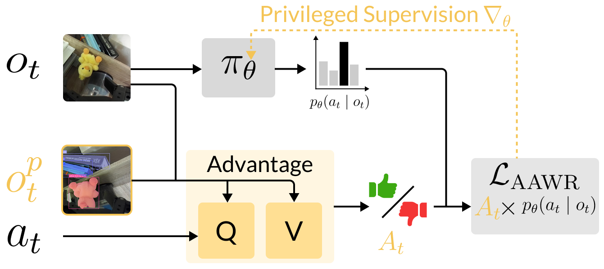
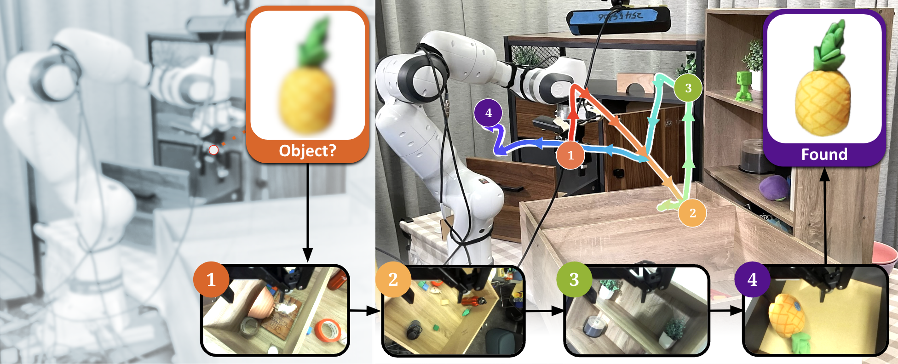
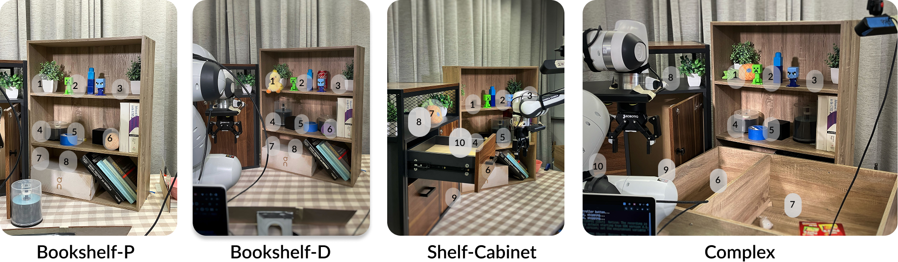
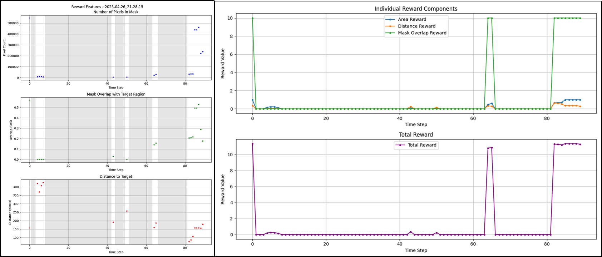
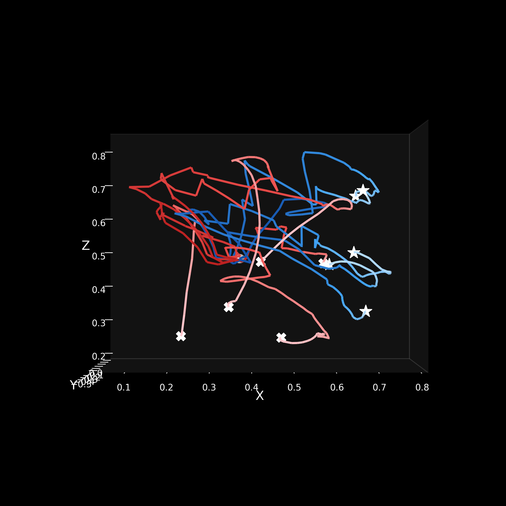
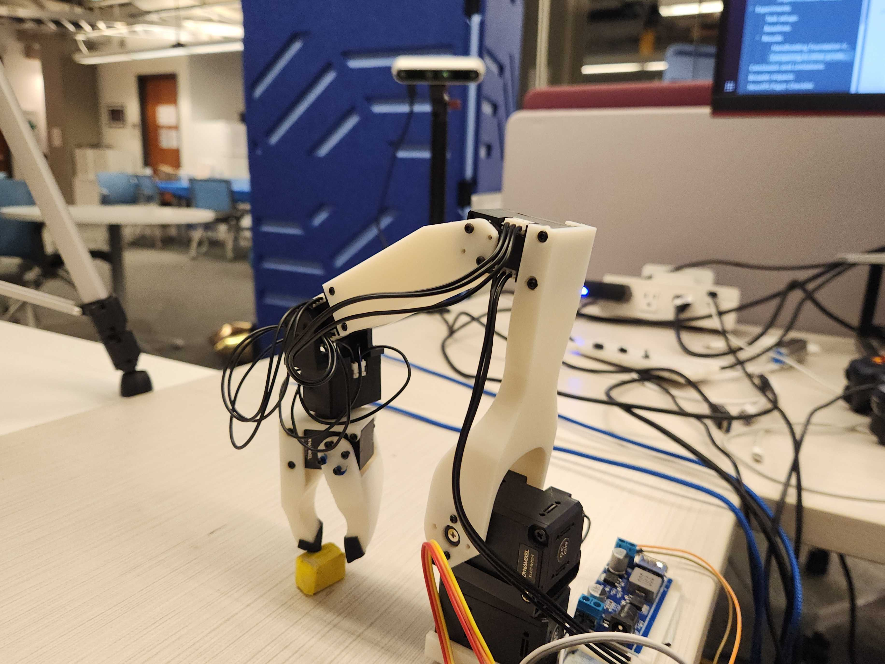

TL;DR: We propose a simple robot learning recipe leveraging privileged information to train active perception policies on real robots.
Abstract (click to expand)

Our method, Asymmetric Advantage Weighted Regression (AAWR), uses privileged information to learn high-quality value functions. The value functions are used to compute advantage estimates, which are used as weights in the weighted BC loss, leading to better policy extraction in POMDPs compared to BC and unprivileged AWR. AAWR inherits the versatility of AWR, which can be applied to both offline data (demonstrations, play data) and online data using the same update.

Goal: Search tasks still pose a challenge for VLAs. So we propose to learn an active perception “helper” policy that searches for a target object under clutter/occlusion, then handoff to a generalist VLA policy (π0) for grasping.

Bookshelf-Pineapple/Duck: Find the target pineapple or duck, placed on bookshelf of three shelves.
Shelf-Cabinet: adds cabinet/drawer hiding spots.
Complex: adds an extra bottom shelf that's heavily occluded from side views.
Deployment Sensors: Wrist Camera RGB + Proprioception + Occupancy Grid.
Privileged Sensors: Object detector bounding boxes and segmentation masks

AAWR scans the scenes more efficiently than the baselines. We notice that baselines tend to drift into out-of-distribution joint configurations or do inefficient motions (e.g. looking up toward the ceiling or straight at the ground), decreasing their long-horizon performance.
Here we show the left camera (not used by the robot) to show how AAWR smoothly scans scene without drifting or colliding with the environment.
An important characteristic for active perception policies is fixation, where the camera moves while keeping the target clearly in view. This is important for maximizing the success rate of the generalist policy which benefits from a clear viewpoint of the object.
As shown below, the privileged information from object segmentation helps the policy to recongnize the target pineapple toy without drifting away.
Please watch the difference between AAWR and baselines in the VGGT Reconstruction Section.
To show AAWR can explore the scene more efficient than baselines, we illustrate the perception range of the wrist camera using Visual Geometry Grounded Transformer(VGGT). The AAWR can explore the scene more efficiently, and run longer horizon before drifting away from the target scene.
Long horizon • AAWR
Explore 3D visualizations of the robot gripper trajectories. Use the controls to switch between offline/online rollouts, scenes, and objects. When a particular combination is unavailable, the option is greyed out.
Offline: select scene & object. Online: select algorithm; Exhaustive also uses the scene. Greyed options indicate that no trajectory is available for that combination.


Task: Real-world “Blind Pick” on Koch robot: pick objects under severe partial observability (policy input is limited; critics have privileged estimates). Task and training recipe follow the same AAWR idea and can be trained offline-to-online.
Sensors / data regime: Partial obs: joints + initial object position (policy input); Privileged obs (training): object position estimate; Reward: dense; Demos: 100 suboptimal; Offline steps 20K; Online steps 1.2K
We developed AAWR on simulation first, and we selected 3 different tasks with varied sensor setups and degrees of partial observability to test the best practice of privileged reward design.
Hard because object is barely visible; privileged true object position helps critics.
Even when fully observable, AAWR can still help because privileged critics don't need to learn object localization from pixels.
Only AAWR reaches 100% by learning to scan workspace effectively; compare to distillation / VIB.
Please read the paper for more details and full roll out videos at our appendix page.